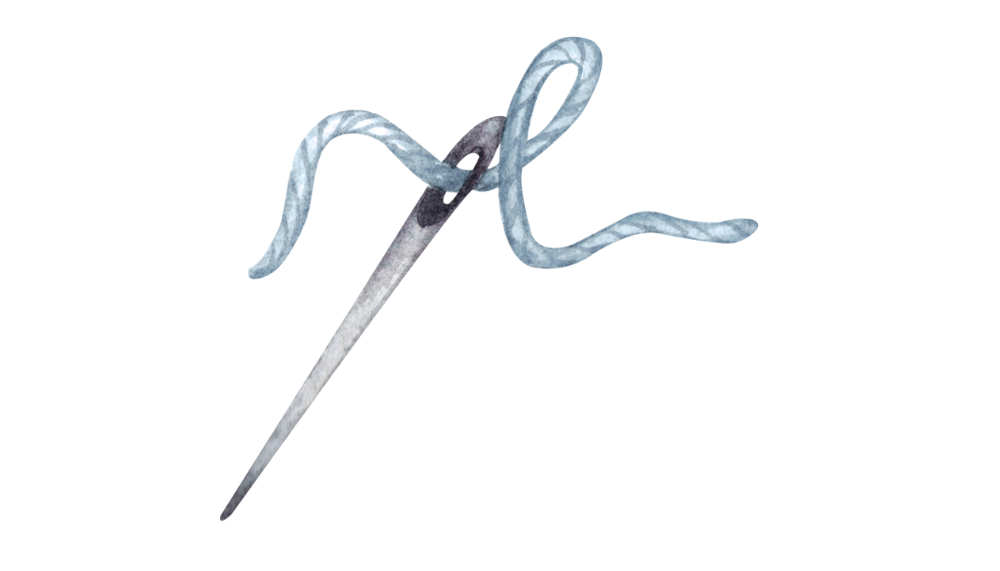

Describe the belief that keeps circling your mind. It might sound right... but something about it doesn't sit well.
0 characters
Trust that inner knowing...
What's been bothering you about this belief?
Step 2: Where did it come from?
Trace it back — was it taught to you, absorbed through culture, or tied to an experience?
0 characters
You're tracing important roots...
Who or what first planted this idea?
Step 3: What does it protect?
Sometimes even false beliefs shield us. What does holding this belief keep you from facing, losing, or risking?
0 characters
This takes courage to explore...
What might you lose if you let this belief go?
Step 4: How does it distort truth?
Even if it feels helpful, how might this belief be warping your view of reality, God, or self?
0 characters
You're seeing with clearer eyes...
Where might this belief be creating blind spots?
Step 5: What's the truer truth?
Is there a deeper truth your spirit is pointing toward — even if it's hard to live out?
0 characters
Your spirit knows truth when it encounters it...
What truth is trying to emerge?
Step 6: What happens if you let go?
Without the old belief... what becomes possible? What new courage, clarity, or peace might emerge?
0 characters
You're glimpsing the freedom ahead...
What new life wants to emerge?

Take a Breath
You've done beautiful, courageous work. Before we thread it all together, take a moment. Let what you've discovered settle.
"Be still and know that I am God." — Psalm 46:10
You've Done Holy Work
More than a thought exercise — this is a journey through your mind, memory, and spirit. You faced distortion. You honored truth. You let go.
0 characters
You've done the work of noticing, tracing, and releasing. That's sacred movement toward clarity.
×
✨ Let the Trinity Speak Into This
The Father restores what was lost."I will restore to you the years that the swarming locust has eaten..." — Joel 2:25
The Son breaks the illusion, carries the weight, and welcomes you back into truth."Come to me, all you who are weary and burdened, and I will give you rest... For my yoke is easy and my burden is light." — Matthew 11:28–30
The Spirit fills the cleared space with clarity, courage, and holy remembering."May the God of hope fill you with all joy and peace as you trust in him... by the power of the Holy Spirit." — Romans 15:13
You were never meant to walk in distortion.
You were meant to walk in truth.
Three voices, one God. One truth that's now yours.